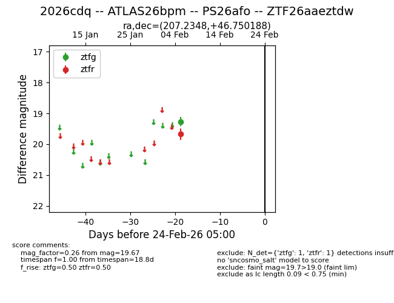
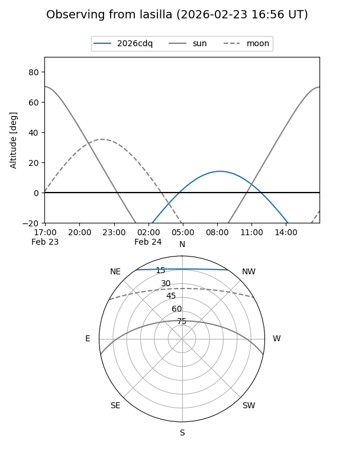
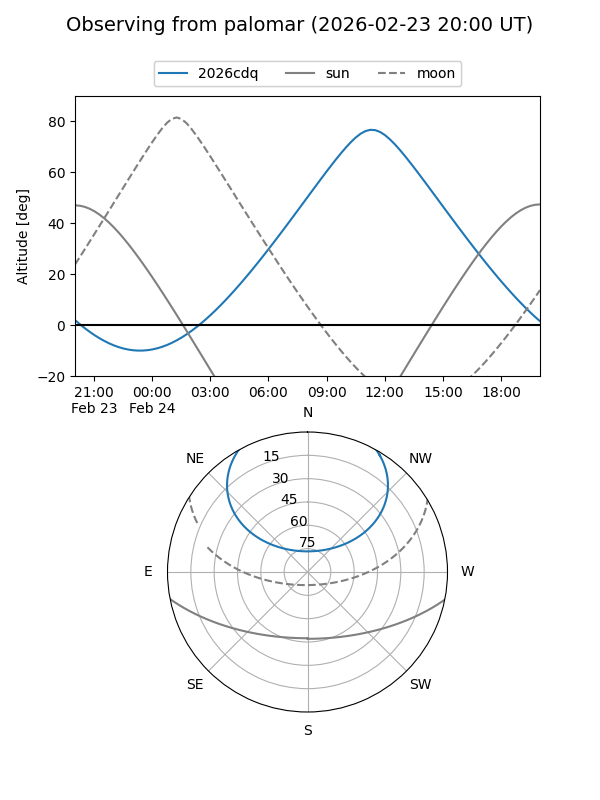

2026cdq
Target 2026cdq at 2026-02-24 09:08
Aliases and brokers:
FINK: link
Lasair: link
ALeRCE: link
TNS: link
YSE: link
alt names
ZTF26aaeztdw (ztf,fink_ztf)
2026cdq (tns,yse)
ATLAS26bpm (atlas)
PS26afo (panstarrs)
Coordinates:
equatorial (ra, dec) = 207.2348,+46.75019
equatorial (HMS+DMS) = 13:48:56.36,+46:45:00.68
galactic (l, b) = (96.7241,+67.34429)
Flags:
Photometry:
last ztfg=19.27, ztfr=19.67
1 ztfg, 1 ztfr detections
Lightcurve

Visibility


Additional plots